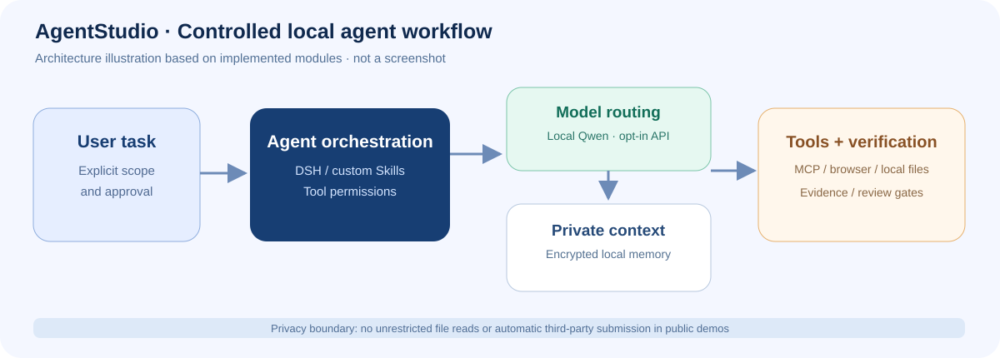
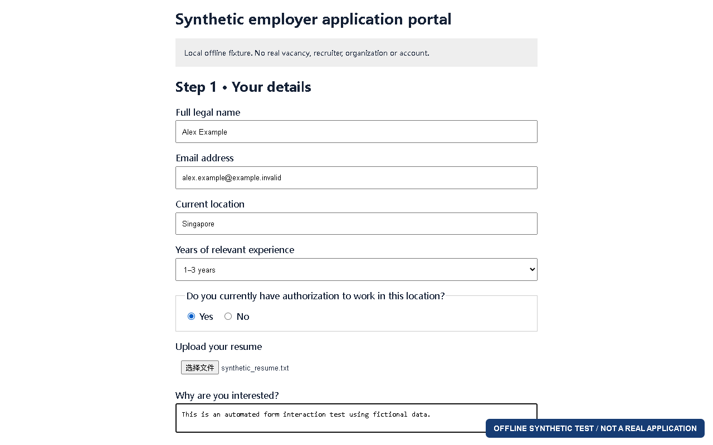
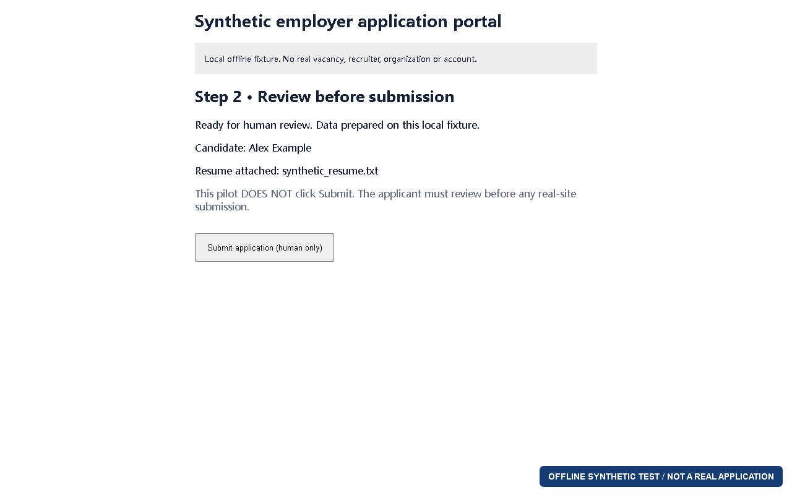
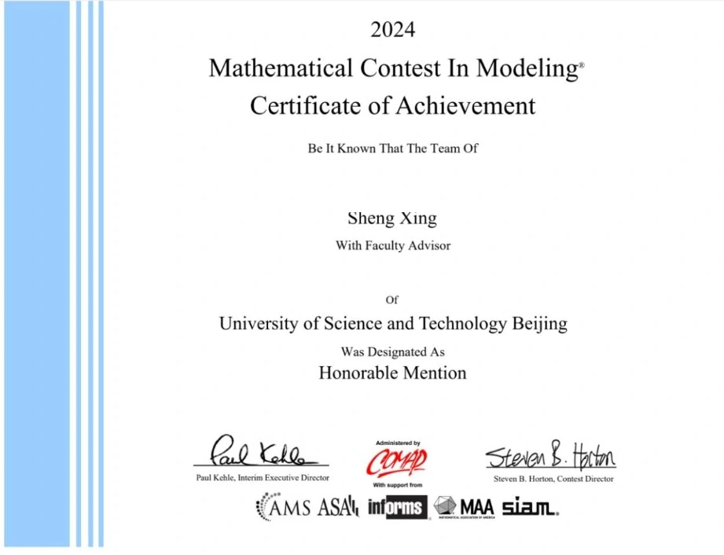

Agent 工作流架构（概念示意）
独立模块包括模型路由、MCP/Skills 工具、私有记忆索引与执行证据检查。图中没有用户会话原文、API 密钥或私人目录信息。
证据类型：项目代码与技术结构整理，不是伪造 GUI 截图。
这是一组从本地工程、真实浏览器测试或本人提供的证据中整理的展示材料。每项都说明其测试场景、已完成的功能以及还没验证的部分。
从任务输入到模型调用、加密记忆和工具执行，重点展示架构设计和权限边界。下图是根据实际模块绘制的技术示意，而不是伪装成系统截图。

独立模块包括模型路由、MCP/Skills 工具、私有记忆索引与执行证据检查。图中没有用户会话原文、API 密钥或私人目录信息。
以下是真实 Chrome + Playwright 对原创离线测试表单的操作。填写内容为合成资料，附件为合成 TXT，最后停在人工确认页面；从未访问真实雇主申请系统。

验证填表、下拉选项、单选按钮、选择本地测试简历附件与下一步准备流程。

流程可进入最终审核页，测试明确要求提交次数为零。真实网站的上传、下一步与提交都需要独立确认。
实际录制了 Chrome 对测试页面的字段填写、附件选择和审核流程。视频只使用合成数据，不涉及求职账号或真实应聘者资料。
这些项目的实际截图与录屏已在本地整理，但包含角色插画、游戏场景或第三方底座界面。公开使用前将逐一核对许可与素材来源，当前不上传这些图像或视频。

根据本人提供的真实证书截图裁剪并使用不透明遮挡保护队友与导师姓名；没有用 AI 重新生成证书。官方赛果显示 Control #2428445 为 Problem C Honorable Mention。
NVIDIA/AMD 数据的财务指标、回归与 EGARCH 股价波动研究。以公开出版社记录和 DOI 作为主要证明；不擅自公开出版方的全文 PDF 或未清权图表。